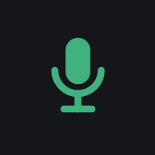

Spreek of typ een notitie en stuur hem naar je privé- of werk-vault.
Alleen met een persoonlijk Microsoft-account, zoals Outlook, Hotmail of Live. Een account van werk of school werkt niet.
De app gebruikt je account alleen om notities in je eigen OneDrive te zetten en vanaf je eigen adres te mailen. Er wordt niets op een server bewaard.